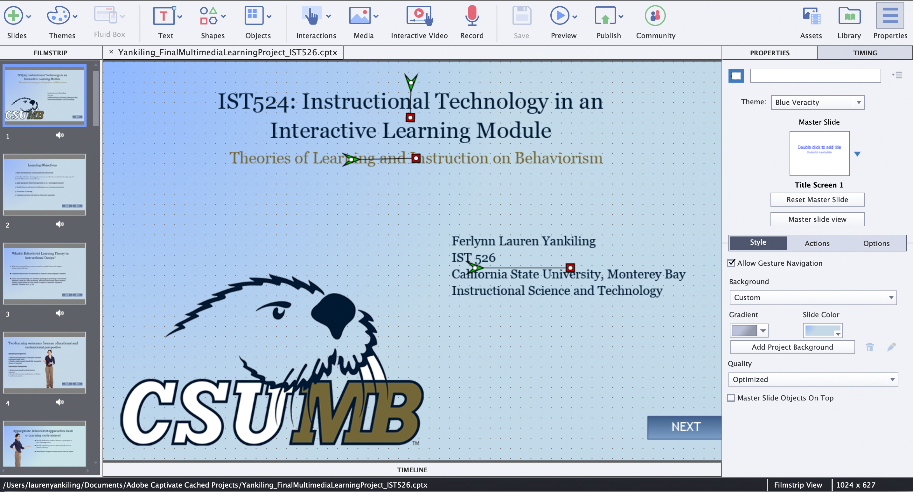

How To Use the ADDIE Model
By Ferlynn L. Yankiling
Step 1: Analyze Your Audience and Project
In order to begin analyzing, we need to gather information on the audience
- Who is the targeted audience? Provide demographic information (Age, gender, education, and experience with technology).
- What do they know about the subject?
- Are they new or experienced learners?
- What are the learning objectives for this project?
- Given timeline

Step 2: Design and Outline Your Project
Create a blueprint for your project and what it will entail along the process. You need to consider these options when in the designing phase:
- Create a storyboard showcasing your ideas of your project (Include graphics, interactive activities, knowledge checks, quiz and applied effects)
- What tools will be implemented for your project?
- How will you design your project in order to engage learners?
- What is the duration expecatancy of the project for learners to partake on?
- Keep in mind who you are trying to design this project for.

Step 3: Development of Your Project
During the development phase, you are building your project. Consider:
- What tools will you be using to create your project?
- When completing the development of your project, there needs to be pilot-testing.
- Who are your user-testers in order to collect data for effectiveness?
- Receiving feedback from your user-testers allows you to know what is working effectively and not effectively in your project.
